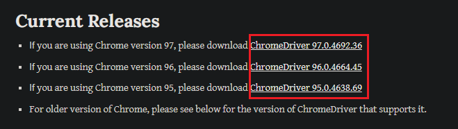
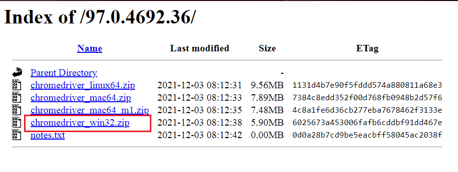

- Начало
- Тестване
- Отдел
- Контакти
- Автоматизация
- Упражнения
Chrome Driver
Изтегли ChromeDriver тук
I. Избор на "Chrome WebDriver":
След натискане на връзката (линк) за изтегляне на драйвъра ще се отвори интерфейс,
в който намери версия за изтегляне, която отговаря на версията на текущият "Chrome"
браузър, който изполваш. Ако версията е например 96.0.4664.45,
намери и свали именно този номер версия или драйвър- версия 96.

II. Изтегляне на "Chrome Driver":
След определяне на текущата версия, натисни върху версията, отговаряща на текущата версия
на брузърът, който ползваш (виж пример в точка I.).
На екрана ще се отвори интерфейс с показани драйвъри
за различните операционни системи.
Изтегли "chromedriver_win32.zip", показан на снимката долу.

III. Съхраняване на "Chrome Driver":
След изтеглянето, на желания драйвър за операционната система, съхрани в същата папка,
в която си съхранил и "Selenium WebDriver".